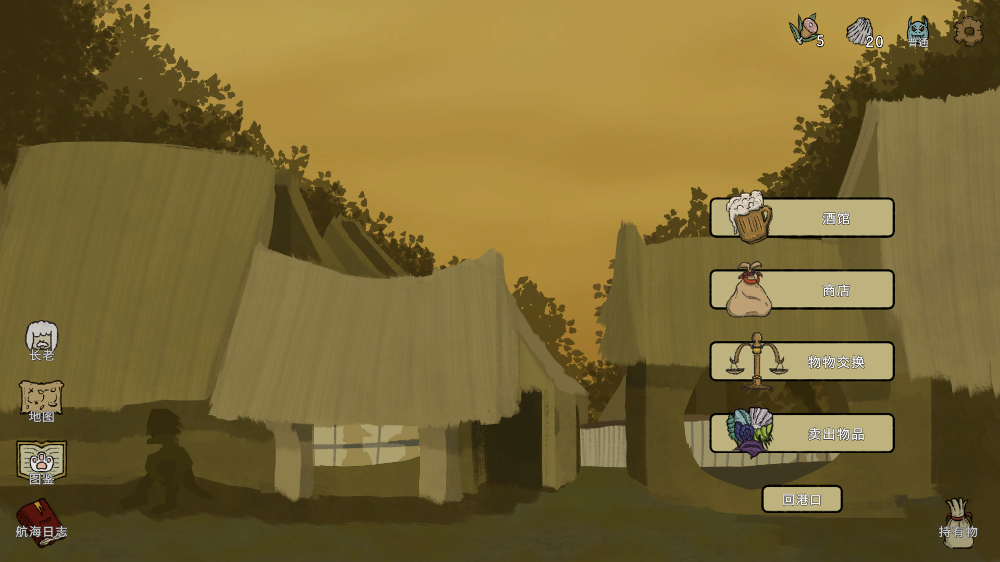
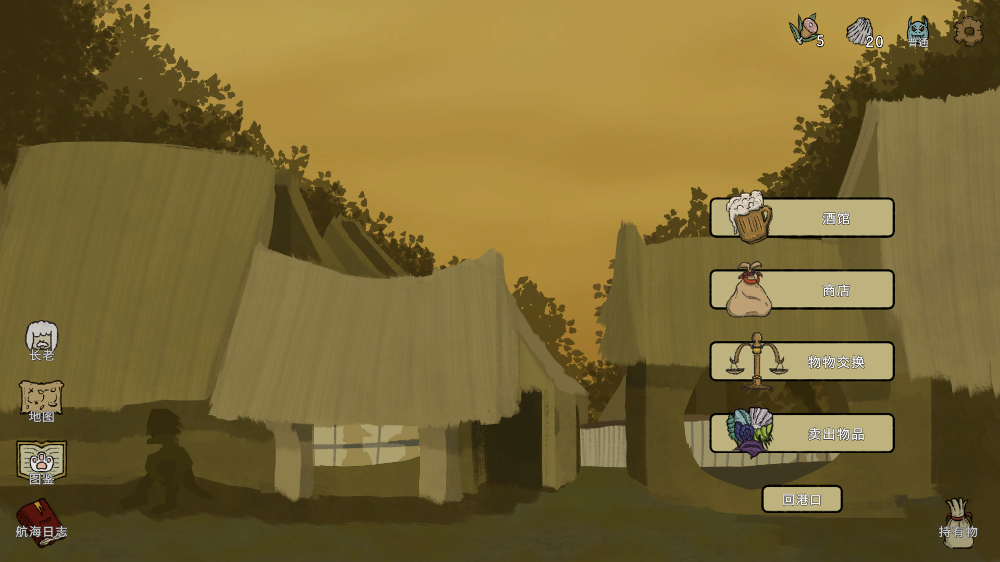

《诺亚的困境》开发日志#5：海上的百年孤独
这是《诺亚的困境》开发日志系列的最后一篇，将会围绕游戏的美术和世界观展开。因为这款游戏本身并不涉及明显的故事情节，所以可以不用担心剧透放心阅读。《诺亚的困境》（Noah’s Dilemma）已于7月24日正式上线Nintendo Switch，如果你对游戏最终成品的样子感兴趣，欢迎在Switch或者Steam上购买支持，谢谢。
世界观：重新解读“诺亚方舟”
当初选择“诺亚方舟”的故事作为背景设定，主要是出于其“用船运送动物”的行为与游戏机制的高度吻合，一个与机制紧密结合的主题可以让玩家快速地理解游戏内容。当玩家听到“诺亚方舟”时，对游戏的主要目的和玩法就已经有了一个大致正确的印象。
选择这个世界观的次要原因，则是因为“诺亚方舟”的故事不仅被全球玩家所熟知，而且市面上还暂时没有一款足够出名的“诺亚方舟”游戏。也是由于其被世人所熟知的特性，原样照搬从一开始就不存在于选项里。反过来说，越是熟悉的故事，就越容易通过修改让它焕发新的生机。于是，我在选择了这个背景后首先敲定的一条原则，就是要尽量削弱这个故事的宗教意味，转而将重心放在诺亚本人身上。这一是因为我希望这款游戏的受众越广越好，过于浓烈的宗教意味也许会起相反效果；二是因为我自己没有有过宗教信仰，所以我想尽量避免谈论不了解的话题。
如果这个故事不再关于宗教，那么它会是关于什么呢？当这个疑问在我心里出现时，我知道对它的回答将决定整个世界观的设计以及整个故事的走向。为了回答这个问题，我开始在脑中设想，假如我是诺亚，遇到了相同的情况，我会怎么想怎么做？也是出于对原故事的不了解，我第一次想象的时候，浮现出来的就是诺亚一个人孤独建造方舟的画面——后来我才知道，在原故事里，诺亚其实是有家人陪伴的。
所以将错就错，我开始想象一个大洪水过后，只剩下诺亚唯一一个人类的世界。在这样的一个世界里，诺亚为什么要建造方舟，又是抱着怎样的心情去拯救动物，而动物们对于诺亚来说又有着怎样的意义，通过思考一系列这样的问题，《诺亚的困境》的世界观也逐渐成型。
故事：愿者上钩
作为一款以玩法为核心且没有什么剧情的游戏，我相信有很多玩家即使通关了也不会知道它讲了一个什么样的故事，这对我来说既是意料之中也是可接受的。就像我自己通关了老头环之后也对剧情一无所知一样，我认为这并不会影响它成为一个好游戏。反之，如果剧情在重玩法的游戏里占据了过多篇幅（甚至强制玩家观看），无疑是会造成消极影响的。所以对于本作的剧情，我一直秉承着一个原则制作，那就是几乎所有的剧情都是可选的，想看则看，不看也不会损失什么，愿者上钩嘛。
当然，玩家注意不到不代表我就可以随便做做，我仍然决定要好好安排一个逻辑自洽的故事——当真的有感兴趣的玩家投入时间玩到了最后，我也希望可以提供一种叙事上的满足感。于是，对于绝大多数的玩家来说，故事在本作中的作用就是在开场动画中给予了之后玩家的行为一个初始动机，除此之外，它的戏份就只存在于与NPC的对话之中了。
写作NPC对话就是典型的碎片化叙事，因为是在创造Lore（宏观叙事）而不是Story（微观的、有严谨逻辑的故事文本），写起来很放松，也是我在这次开发中觉得最有意思的部分。想起某个网友曾经说过：“Lore is story-telling for lazy people”——不得不说真的很有道理，至少这次我自己写起来觉得轻松自由，和做其他部分相比简直是在摸鱼。本来还想在物品和遗物描述里也加上Lore文本，但由于工作量太大以及可能会给玩家造成信息过载，就还是放弃了。以后有机会了可以再在百科全书里添加，也这是Lore比Story更灵活的地方，有也行，没有也行。从魂系游戏火热开始，重玩法的游戏搭配Lore而不是Story似乎成了一种定式，而这也确实是性价比最高的做法。
美术：粗糙、自然、有机、魔幻
我是一个叛逆的人，看到Steam上有大量以可爱猫咪为卖点的游戏我就想做个猫咪不可爱的游戏。这也是为什么我在知道了我要为《诺亚》画很多动物以后，首先定下来的就是动物一定不能往可爱或者美丽的方向画，这个奇怪的理由造就了《诺亚》猎奇的画风，也因此在美术上做到了与其他动物游戏的区别化。
当然，叛逆心理只是理由之一，动物长得歪瓜裂枣，神情或紧张或严肃，也是为了配合本作的世界观——能熬过大洪水还活下来的动物，肯定都经历了很多，在弱肉强食的世界里，可爱并不管用。这并不是说我不喜欢可爱的动物，而且我发现，在画迷你版的动物图标时，好像只要特征对了怎么样都画不丑，即使说不上可爱，在我看来也是丑萌丑萌的——动物们还是太可爱了。
这次没有选择像素风而选择了2D手绘卡通风格，主要是想看看自己能不能画得动高分辨率，如果可以，那么以后做游戏在美术上可以多一种选择，而且我很喜欢漫画，希望以后能有机会做漫画风格的游戏，这次也算是提前演练。这次尝试下来，意外地发现还是有很多玩家喜欢这种与主流审美背道而驰的风格的，而且喜欢的人就会很喜欢，也是我想追求的效果。越接近主流审美就会越相像，对我来说，手绘时那种不那么完美，不那么正确，甚至可以说粗糙，反映了每个画手自己特色的线条，反而更具魅力。
我在画除动物以外的素材，比如物品、遗物、背景、UI时，秉承的原则也与我在挑选音效时一样：尽量往自然、有机物的方向靠。与此同时，游戏内所有的命名也遵循这个原则。比如游戏内的治疗物品，做成药剂是最简单的方案，但是我把很多都做成了果实，比如动物进入暴走状态之后，可以通过食用“平静梅”缓解。
可能有人会问，吃个梅子就能平静下来，这科学吗？这正好可以引出我做决定时的另一个原则：魔幻现实主义。我对于把魔幻现实主义应用到《诺亚》的美术上的理解就是，找到一个介于可能与不可能之间的平衡点，过于可能的东西就变成了现实主义，过于不可能的东西就变成了幻想（fantasy），这些都不是我想要的，我想要的效果就是类似“吃梅子治病”——你说它完全不可能吧，又好像有那么点可能；你说它可能吧，在现实中又确实没有人靠吃梅子治病。
不过，在画背景的时候，因为不能虚构自然物，所以还是以写实为主。背景美术应该是这次的美术中最难的部分了，难点一是在于要画大量不同的岛上自然风景，二是在于我还需要表现四个海域的不同特色。有一部分的背景构造比较简单，我可以凭想象画出来，但对于复杂的背景，或者想象力枯竭的时候，还是需要寻找参考。有一天我出门逛古书店，偶然发现了一些古早摄影集，里面有些照片很适合作为背景，于是来了灵感。有许多背景是基于这些书里的老照片创作的。
 

海上的百年孤独
总的来说，我想在《诺亚的困境》里实现的美术与世界观，或者说氛围，可以用一句话概括：海上的百年孤独。在开发的伊始，我就抱着读参考文献的心态读完了马尔克斯的《百年孤独》，在开发快结束的时候读完了《世上最美的溺水者》，虽然最后发现比起前者，还是后者的氛围更适合本作，但“百年孤独”这个词本身的确十分精准地表现出了我最初代入诺亚身份后所感受到的东西。
当然，作为一款小型独立游戏，肯定是无法在任何程度上比肩《百年孤独》的，想表达的只是我从一开始就定下了“海上的百年孤独”这个方向，并在开发的途中努力向它靠拢，有什么不确定的时候也以它为坐标轴判断，最终确实得到了一个较为和谐且满意的美术与世界观——这种早期定下概念并一直坚守下去的做法的确成效不错。
结语
至此，《诺亚的困境》开发日志系列就全部结束了。像我之前说的那样，也许以后也不会再有一个我的游戏能有这样的待遇可以拥有五篇涵盖游戏制作方方面面的文章了，这次能做到一是因为这是我辞职后的第一款游戏，经济压力还比较小，能有时间分配到这上面，二是因为本作的开发过程包含了很多我初次尝试的东西，也是我第一次只靠自己就从0到1完成一款游戏，所以可写的东西也比较多。
当然，就算没法写开发日志，游戏肯定还是会继续做的，之后几年争取一年发售一款（巨大的flag），请继续支持我的游戏！希望这五篇开发日志能对你有所帮助，感谢阅读，我们下次再见。
全文目录：
- 《诺亚的困境》开发日志#1：数独与方舟（关于原型与立项） - 已发布
- 《诺亚的困境》开发日志#2：编程上的总结与回顾（关于编程） - 已发布
- 《诺亚的困境》开发日志#3：设计上的总结与回顾（关于游戏设计） - 已发布
- 《诺亚的困境》开发日志#4：氛围与声音（关于作曲与音效） - 已发布
- 《诺亚的困境》开发日志#5：海上的百年孤独（关于美术与世界观） - 已发布
GP
2025.7.25